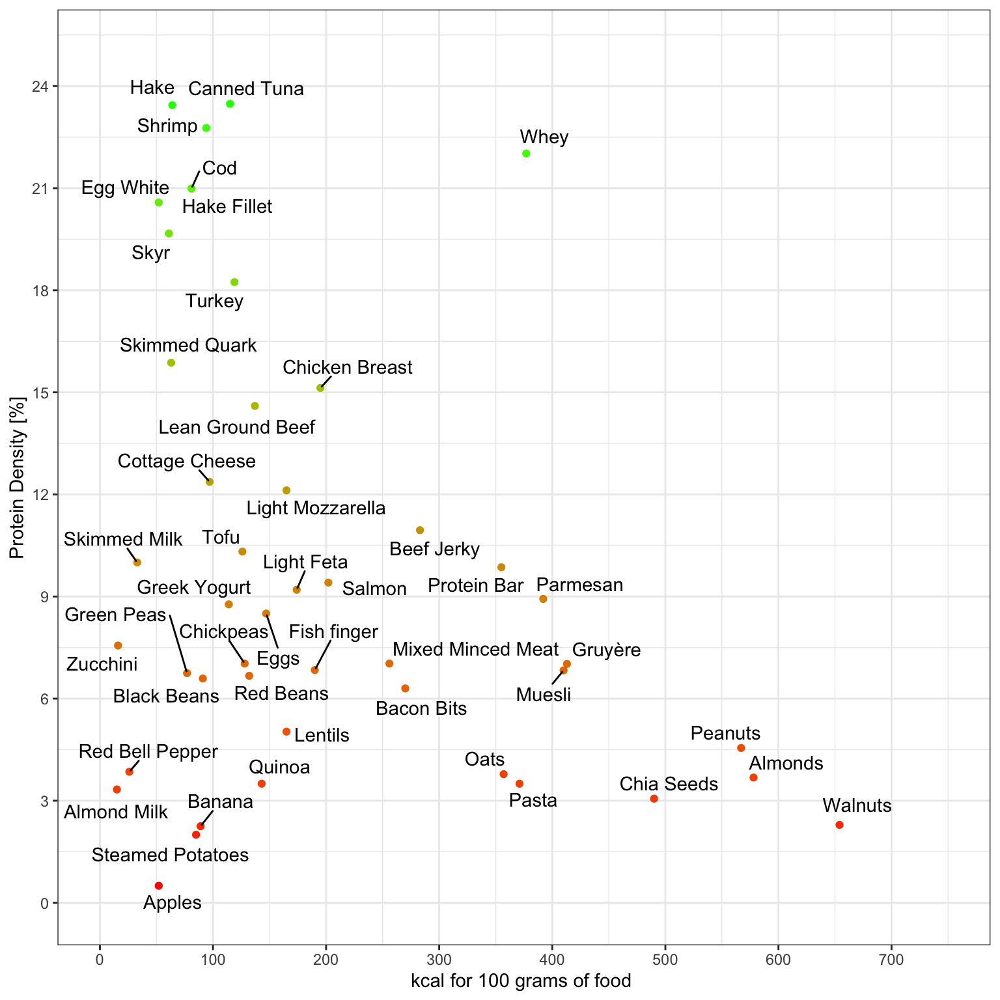

Consuming foods rich in protein but low in calories plays a crucial role in managing body weight and reducing body fat percentage. Moreover, high-protein foods often induce a stronger feeling of satiety. When tailoring a diet to enhance muscle growth, comprehending the calorie and protein composition of various foods is essential. The objective of this graph is to determine which foods offer the highest protein content per fixed amount of calories.
Hence, I designed this scatter plot to facilitate visualizing which foods offer ample protein while being economical in calories.
However, there are limitations to consider when interpreting this graph:
Firstly, the Y-axis may seem somewhat counter intuitive as it represents protein density per 100 kcal.
The satiety levels associated with each food vary significantly and could significantly influence dietary choices.
It’s important to note that prioritizing high-protein foods doesn’t imply exclusive reliance on them; a balanced diet, devoid of excess, remains the optimal recommendation for most individuals.
How to read this scatter plot
On the axis, as you move towards the right, the food becomes more calorie-dense. Similarly, moving upwards indicates increasing protein density.
Consequently:
Top left indicates foods with high protein content per calorie and low calorie count per 100g.
Bottom right represents foods with low protein content per calorie but high overall calorie count per 100g.
Top right denotes foods with high protein content per calorie and high calorie count per 100g.
Bottom left signifies foods with low protein content per calorie and low calorie count per 100g.
Code
source("libraries.R")dr <-read_csv("prot.csv", show_col_types =FALSE )df <- dr %>%mutate(perc_prot = prot_per_100g/kcal_per_100g*100, prot_per_serving = prot_per_100g *serving /100,kal_per_serving = kcal_per_100g*serving /100)scatter_plot1 <- df %>%ggplot() +# Add points to the plot with kcal on x-axis and perc_prot on y-axisgeom_point(aes(x = kcal_per_100g, y = perc_prot, color = perc_prot, text = name)) +# Add text labels using geom_text_repelgeom_text_repel(aes(x = kcal_per_100g, y = perc_prot, label = name), force =6) +scale_x_continuous(n.breaks =10,limits =c(0,700)) +scale_y_continuous(n.breaks =10,limits =c(0,23)) +scale_color_gradient(low ='red',high ="green") +theme(legend.position ="none") +labs(y ="Protein Density [%]", x ="kcal for 100 grams of food ") scatter_plot1

Figure 1: for 100g of content
Code
table_recap <- df %>%select(name,kcal_per_100g,prot_per_100g,perc_prot) %>% dplyr::arrange(desc(perc_prot)) %>%kable(col.names =c("names","Kcal for 100g","grams protein for 100g of food","Protein Density [%]"),digits =2)table_recap